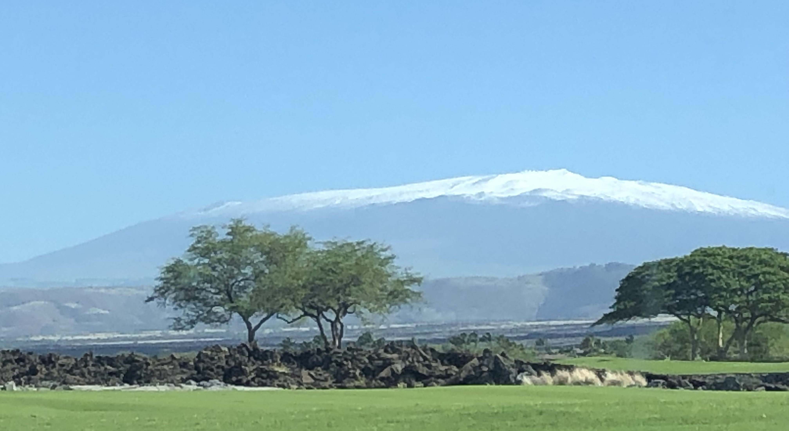

| Mauna Kea |
|  |
Technically the tallest mountain in the world
-
The actual elevation of Mauna Kea is 4207.3 m; however, measuring from its underwater base, this mountain has a dry prominence of 9330 m.
-
Mauna Kea is an inactive volcano on the island of Hawaii.
-
It is about one million years old and thus passed the most active shield stage of life hundreds of thousands of years ago.
-
With its high elevation, dry environment, and stable airflow, Mauna Kea's summit is one of the best sites in the world for astronomical observation.
-
Mauna Kea is home to Lake Waiau, the highest lake in the Pacific Basin.